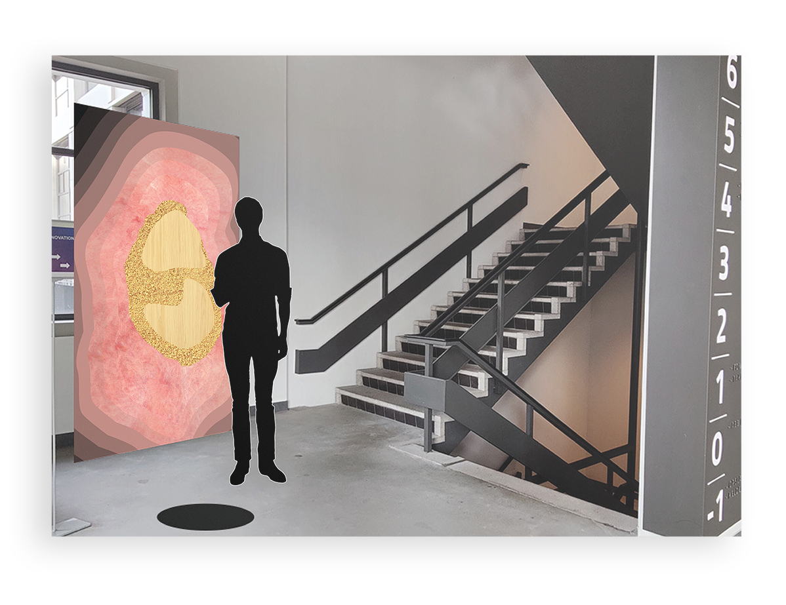
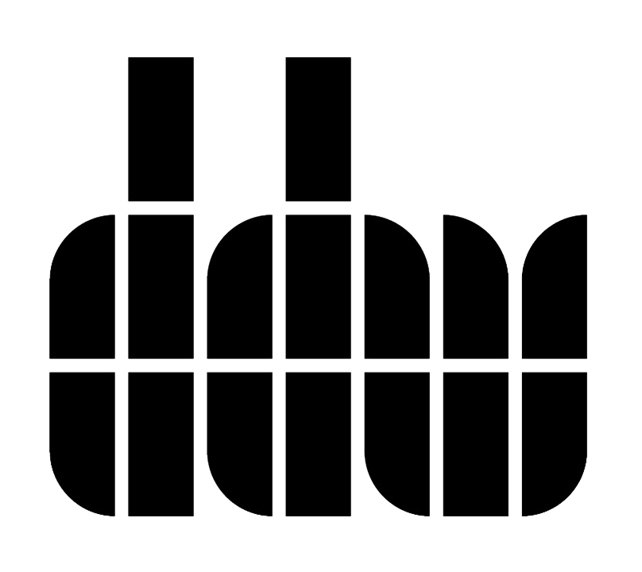
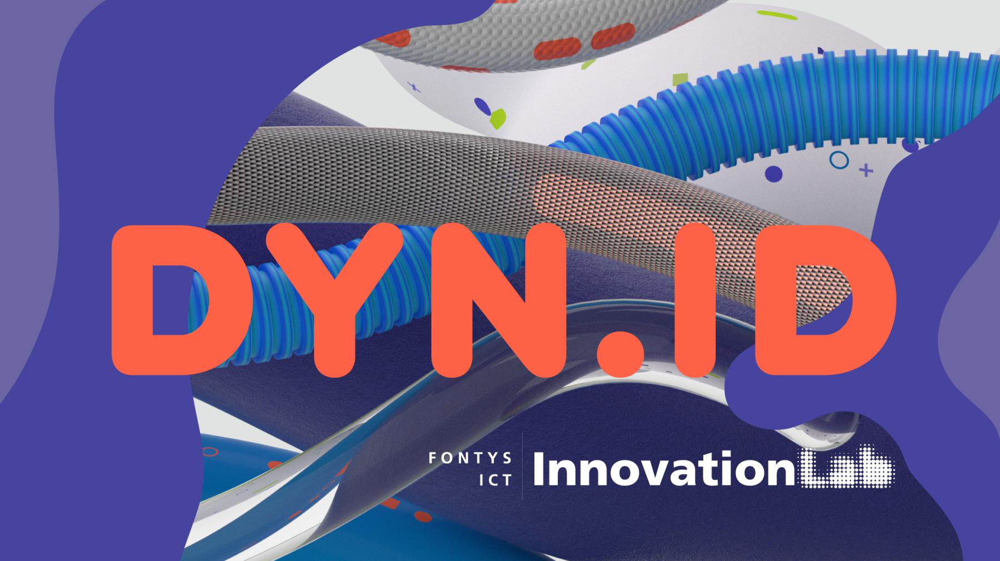
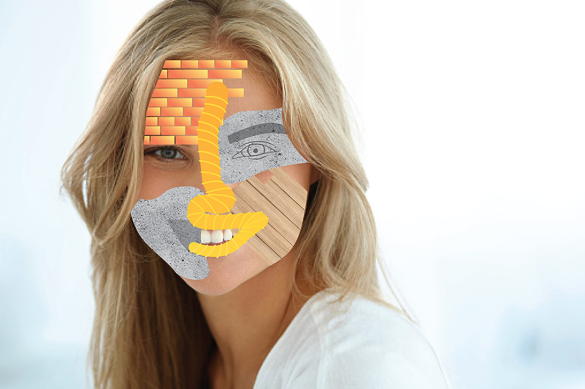
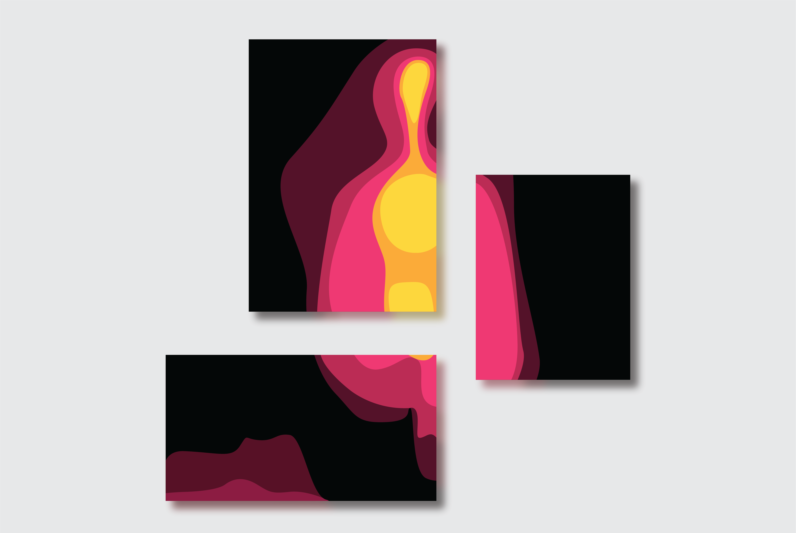
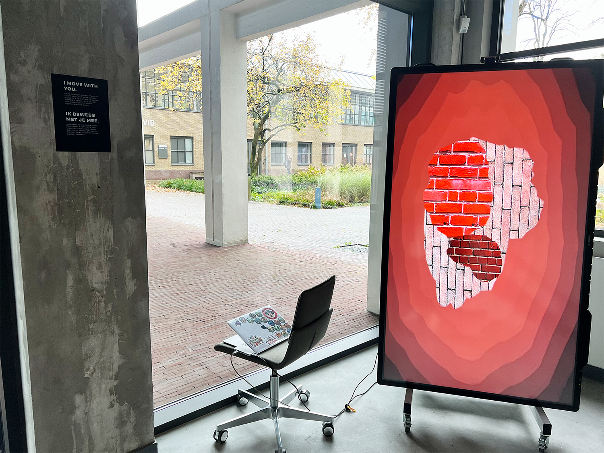
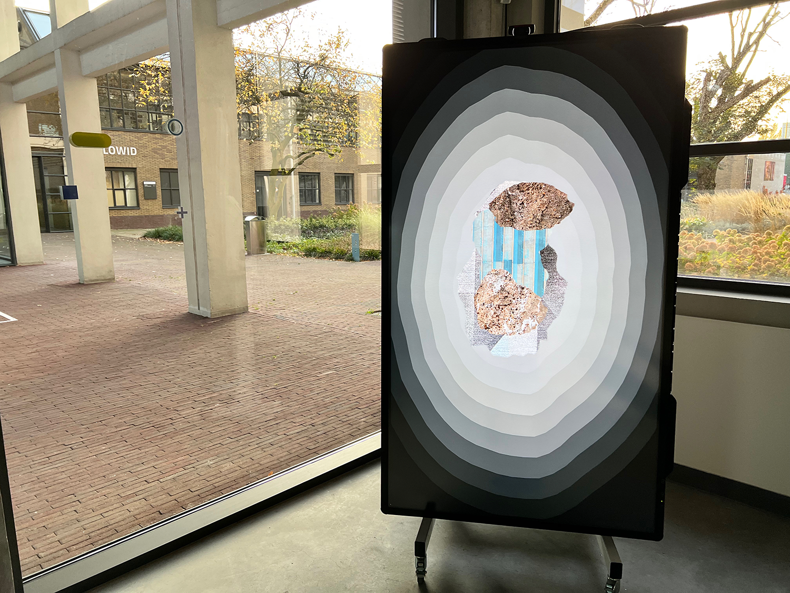
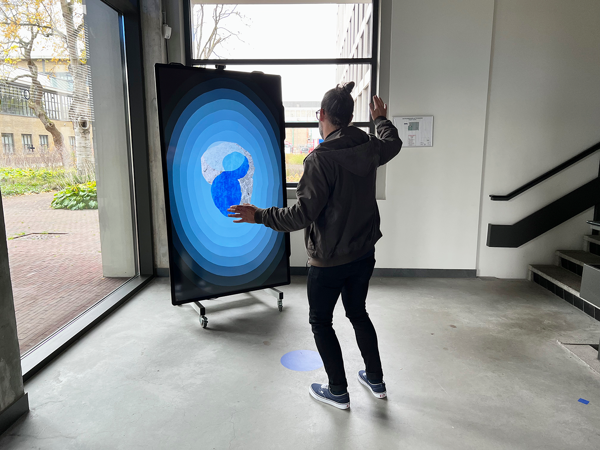

Dutch Design Week
Concepting, Design, Development - 2022

Concepting, Design, Development - 2022


Elk jaar vindt in Eindhoven de Dutch Design Week plaats. Dit is een
groot design evenement waar ontwerpers hun werk en ideeën
presenteren. DDW richt zich vooral op de toekomst van design en
promoot jonge talenten die hieraan willen meewerken. De focus van
het DDW-evenement ligt op experimenteren, innovatie en crossover.
Voor de Dutch Design Week van dit jaar biedt Fontys haar
bezoekers een meeslepende en gepersonaliseerde, datagestuurde
ervaring in hun ICT InnovationLab. Voor dit project was het de taak
om te brainstormen en een idee te bedenken voor de meeslepende
bouwervaring van DDW. Het hoofdthema was een interactief gebouw en
concepten bedenken die te maken hadden met emoties en/of
herinneringen.

Tijdens deze Dutch Design Week werkten we niet alleen. De bedrijven
Hyper Culture en Studio Krom werkten ook mee aan dit project en
gaven ons ondersteuning. Hyper Culture is een duo van ontwerpers en
regisseurs uit Nederland. Voor de DDW Fontys-projecten hadden ze een
unieke huisstijl ontworpen die alle projecten samen zou brengen.
Studio Krom is een ontwerpstudio die de mogelijkheden van
nieuwe media onderzoekt. Zij hebben ons gedurende het hele project
geadviseerd over onze ideeën en concepten en ze hebben geholpen bij
het ontwikkelen van onze interactieve installaties.
Bij het bedenken van concepten moesten we nadenken over de vraag:
“Hoe ziet het gebouw jou?”. Na een reeks iteraties heb ik twee van
mijn concepten gecombineerd tot één. Het eerste concept heet
“Material Faces”. Bij dit concept ziet het gebouw de bezoekers als
een weerspiegeling van zichzelf, als een gezicht met verschillende
materialen en texturen. Op het gezicht van de bezoeker verschijnen
verschillende bouwmaterialen en texturen, die samen de
gelaatstrekken vormen. De materialen en kleuren die de bezoekers
zien, is gebaseerd op de emotie die de bezoeker voelt. Dit wordt
gemeten door middel van emotie detectie.
Het tweede concept heet “Emotional Warmth”. Het gebouw ziet je
als lichaamswarmte. Het kan de emotie van de bezoeker herkennen en
toont hen de lichaamswarmte van de bezoeker. Elke emotie ziet er
anders uit, omdat mensen bij verschillende emoties warme en koude
plekken op verschillende delen van het lichaam voelen.


Het eindproduct is de combinatie van de twee bovengenoemde concepten. De bezoeker wordt door het gebouw gedetecteerd met behulp van object tracking. Het gebouw toont de bezoeker een weerspiegeling van zichzelf door het lichaam van de bezoeker om te zetten in een abstracte vorm met verschillende materialen en texturen. Er zijn meerdere vormen composities die één van de vier emoties vertegenwoordigen. Deze composities hebben verschillende materialen, texturen, bewegingen en gevoelens. Wanneer de bezoeker voor het grote scherm staat, wijst het gebouw één compositie toe aan de bezoeker. Het is aan de bezoeker om de emotie te achterhalen.




PREV